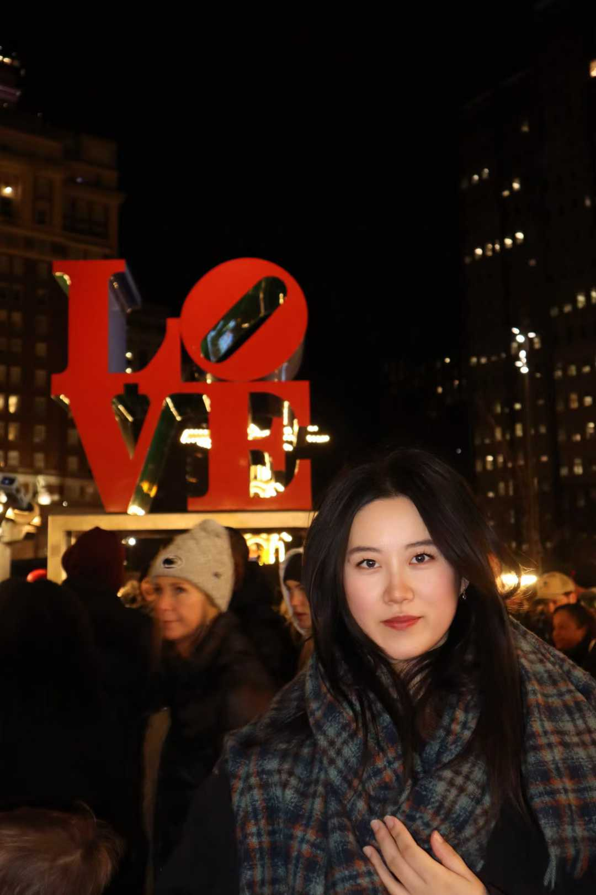

Hello! I am Xiaocao Lu, a biotechnology master’s student at Harrisburg University of Science and Technology. My research interests lie at the intersection of biotechnology and sustainable tourism, with a focus on consumer behavior and health-related decision making.
I hold dual bachelor's degrees from Hainan University and Arizona State University, and a Master's degree from The Chinese University of Hong Kong.
Email: xclu1@asu.edu
Research Interests
- Sustainability: Climate change impacts on tourism.
- Consumer Behavior: Decision making in health contexts.
- Resilience: Destination resilience and travel intentions.
Education
- M.S. in Biotechnology, Harrisburg University, Present
- M.S. in Sustainable Tourism, CUHK, 2023
- B.S. in Management, ASU & Hainan University, 2022
